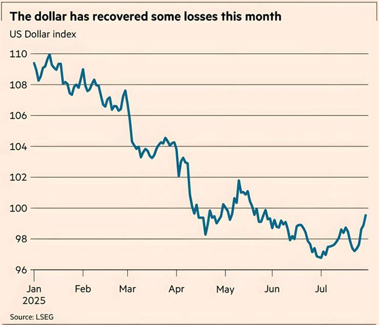
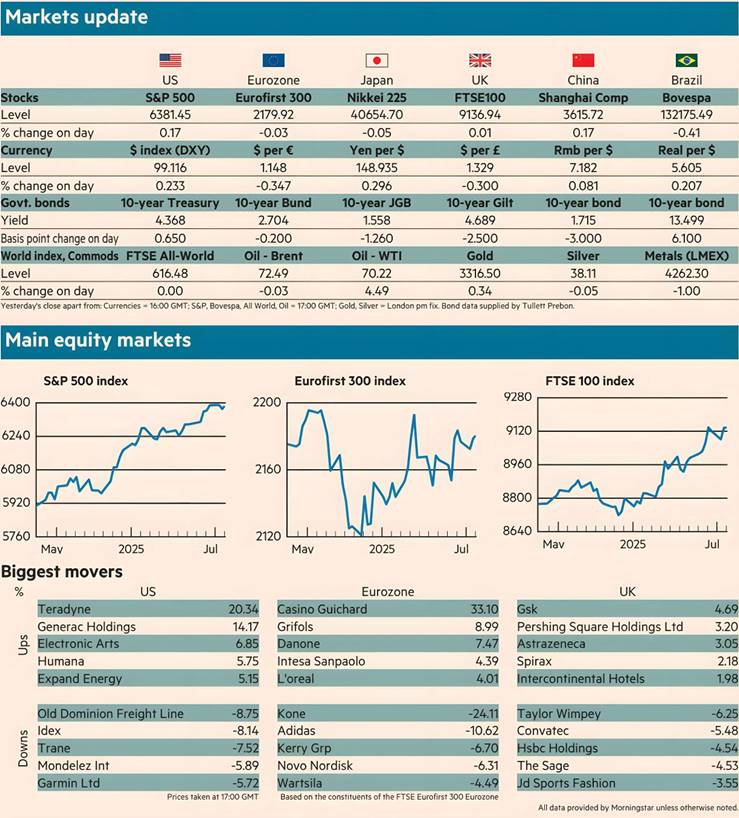

The dollar gained yesterday after data showed that US GDP rose more than expected in the three months to June. The American economy grew at an annualised rate of 3 per cent, beating Wall Street’s expectations and contrasting with a 0.5 per cent contraction in the first quarter.
However, analysts noted that the headline figure masked a significant slowdown on an annual basis and was primarily driven by a fall in imports by companies that had previously been stockpiling in anticipation of US tariffs on imported goods.
The US Dollar index, which measures the strength of the currency against a basket of peers, was 0.6 per cent higher by the early afternoon in New York. The move puts the dollar on track for its biggest gains since October — before the election of President Donald Trump.
The currency is still down more than 8 per cent this year, having tumbled as Trump’s volatile trade policies and his criticism of the US Federal Reserve shook investor faith in American assets.
US government bond yields rose on signs of continued economic strength. Those on benchmark 10-year Treasuries gained 4 basis points to 4.37 per cent as investors sold the debt. Immediately after the data release, yields on two-year US debt, which tend to track interest rate expectations, rose 3bp.
Wall Street stocks also rose with the blue-chip S&P 500 index moving 0.2 per cent higher and the tech-heavy Nasdaq Composite gaining 0.3 per cent. US stocks continue to hover near record highs, having roared back from a rout in April when Trump first announced his “reciprocal” tariffs.
The euro fell for the fifth consecutive session, losing 0.7 per cent of its dollar value to trade at $1.1470. The single currency has fallen 2.3 per cent so far this week, leaving it on track for its worst week since September 2022.
The region-wide Stoxx Europe 600 index closed flat, Frankfurt’s Xetra Dax rose 0.2 per cent while in Paris the Cac 40 edged 0.1 per cent higher. London’s FTSE 100 was flat.
Sterling fell 0.6 per cent against the strengthening dollar while the yen retreated 0.4 per cent.